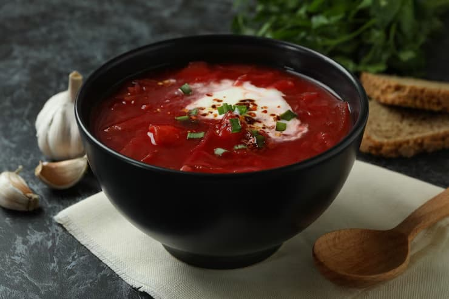
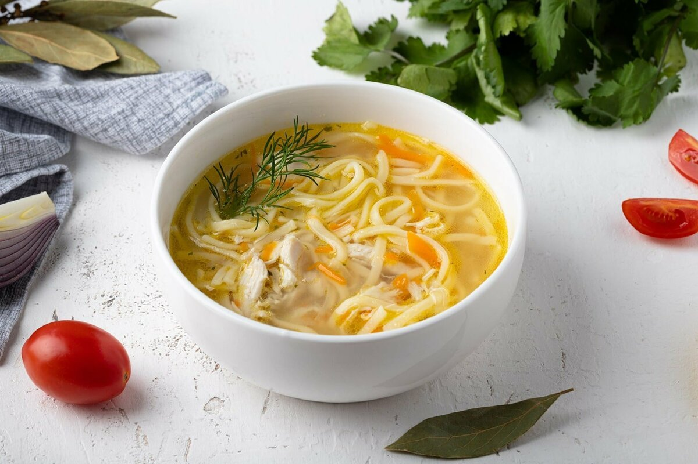

Первые блюда · куриный суп рецепт
Куриный суп с лапшой

Пошаговая инструкция
Отварите курицу до мягкости, бульон процедите.
Добавьте овощи и варите 10 минут.
Всыпьте лапшу, посолите и посыпьте зеленью.

Отварите курицу до мягкости, бульон процедите.
Добавьте овощи и варите 10 минут.
Всыпьте лапшу, посолите и посыпьте зеленью.